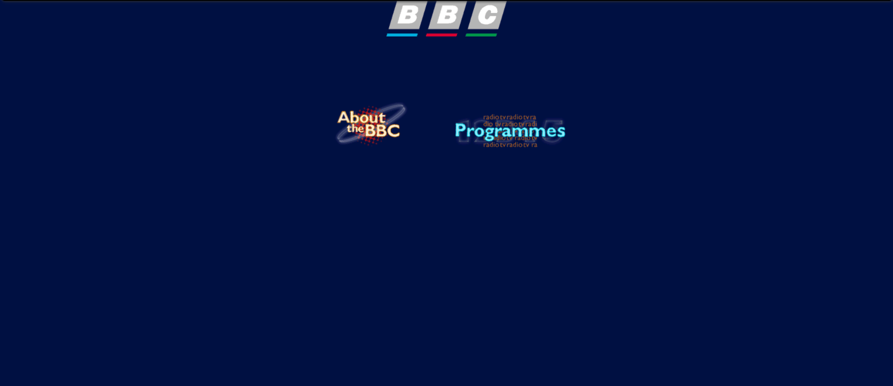

BBC, ou sem o acrônimo, British Broadcasting Corporation é atualmente um dos maiores gigantes do jornalismo, sendo a programação mais sucedida publicamente.
Entretanto, mesmo sendo uma força da mídia capaz de instigar preocupação entre seus competidores, seu começo na internet fora muito mais humilde.
Anteriormente, seu foco era direcionado apenas a rádios, por esse ser seu ganha-pão desde 1922, porém, com a reviravolta entre todas as mídias de entretenimento que ocorreu quando a internet fora lançada, a estação de rádio acabou desconsiderando o fator de crescimento da internet por vários anos, utilizando-a apenas como fonte de informação da empresa de 1996 aos anos 2000, mantendo seu site de pé apenas para uma "about page", não servindo um propósito sólido além disso.
É claro, algumas mudanças acabariam sendo implementadas na simples "about page", incluindo o horário de programação da rádio, mais informações da empresa, e até algumas headlines em seu site que mostravam que em um determinado horário um certo assunto seria abrangido.
Com várias rádios já fazendo avanços na era da internet, criando sites e blogs profissionais de notícias afim de garantir um público a frente, era óbvio que a BBC acabaria travando sua atenção nisso, por fim, criando seu primeiro site oficial de notícias, onde os assuntos da última hora poderiam ser vistos puramente só pela internet, sem ter a necessidade de um rádio.
Próxima Página